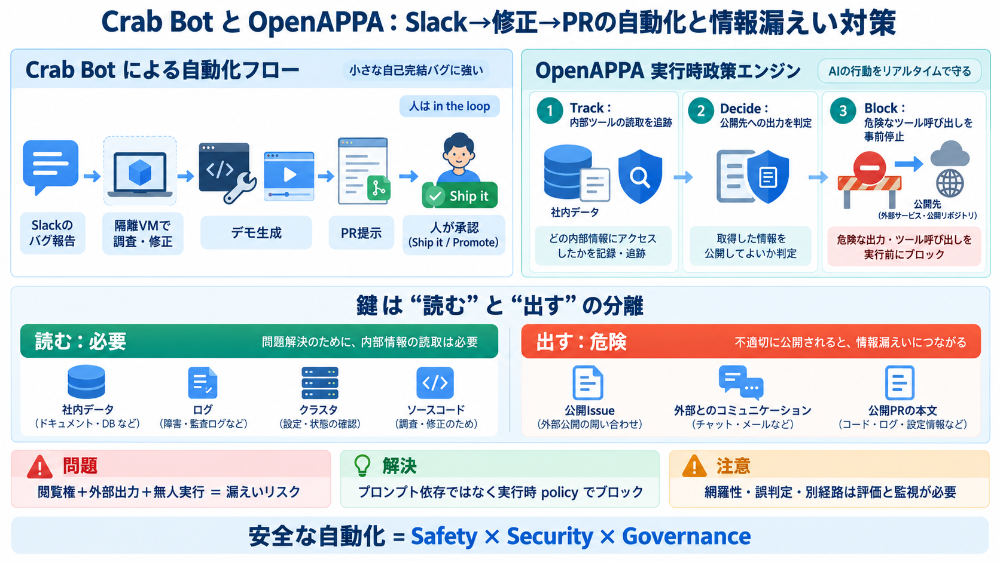

MCP Security Crisis: Systemic Design Flaws in AI Agent ...
Pipelab. “The State of MCP Security 2026: Incidents, Attack Patterns, and Defense Coverage.” Pipelab, April 2026. The …

Pipelab. “The State of MCP Security 2026: Incidents, Attack Patterns, and Defense Coverage.” Pipelab, April 2026. The …
Simon Willison's lethal trifecta framing is still the cleanest way to think about this: private data, untrusted content,…
This makes a lot of sense to me. Most of my MCP usage with coding agents like Claude Code has been replaced by custom sh…
> The Chore: Go label every data input, and every tool (especially MCP tools). For MCP tools & resources, you can use th…
Docker State of Agentic AI (800+ developers): 46% of teams earlier in their journey name security/compliance the top MCP…